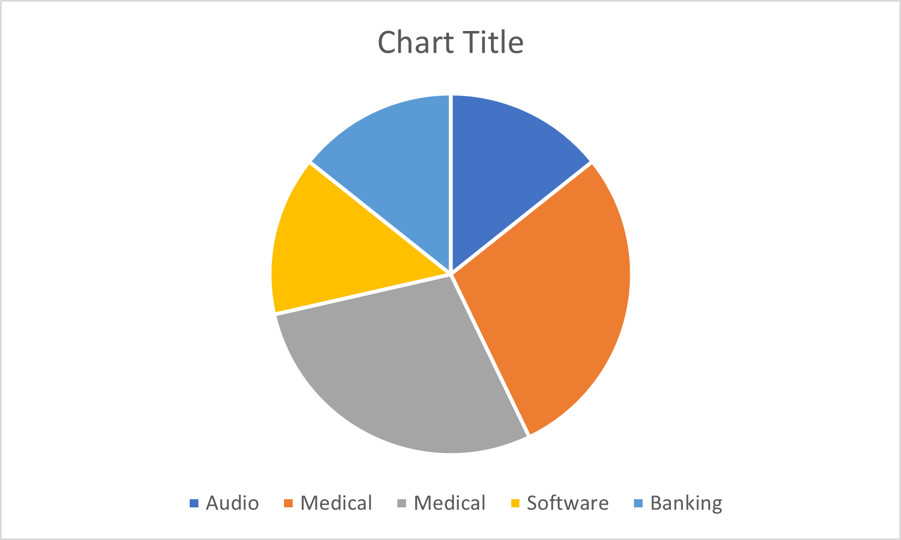

Ideal Jobs
Common Elements based on Industry
| Group Member | Job Titles | Industry | Qty |
|---|---|---|---|
| Christopher S | Software Developer | Audio | 1 |
| Gerard | Software Developer - Medical Computing | Medical | 2 |
| Liljana | Biomedical Software Engineer | Medical | 2 |
| Matthew | Cyber Security Analyst | Software | 1 |
| Nicole | Financial Crime Intelligence Analyst | Banking | 1 |

Common Elements based on General Skills
| Group Member | Job Titles | Skills | Qty |
|---|---|---|---|
| Gerard | Software Developer - Medical Computing | Problem Solving | 4 |
| Liljana | Biomedical Software Engineer | Problem Solving | 4 |
| Matthew | Cyber Security Analyst | Problem Solving | 4 |
| Nicole | Financial Crime Intelligence Analyst | Problem Solving | 4 | Gerard | Software Developer - Medical Computing | Team Work / Collaboration | 4 |
| Christopher S | Software Developer | Team Work / Collaboration | 4 |
| Matthew | Cyber Security Analyst | Team Work / Collaboration | 4 |
| Nicole | Financial Crime Intelligence Analyst | Team Work / Collaboration | 4 |
| Nicole | Financial Crime Intelligence Analyst | Communication Skills | 3 |
| Liljana | Biomedical Software Engineer | Communication Skills | 3 |
| Gerard | Software Developer - Medical Computing | Communication Skills | 3 |
| Christopher S | Software Developer | Writing | 3 |
| Liljana | Biomedical Software Engineer | Writing | 3 |
| Matthew | Cyber Security Analyst | Writing | 3 |
Common Elements based on IT Specific Skills
| Group Member | Job Titles | IT Skills | Qty |
|---|---|---|---|
| Christopher S | Software Developer | C++ | 2 |
| Gerard | Software Developer - Medical Computing | C++ | 2 |
| Christopher S | Software Developer | Git | 2 |
| Gerard | Software Developer - Medical Computing | Git | 2 |
| Christopher S | Software Developer | Software Development | 2 |
| Matthew | Cyber Security Analyst | Software Development | 2 |
| Gerard | Software Developer - Medical Computing | Software Engineering | 2 |
| Liljana | Biomedical Software Engineer | Software Engineering | 2 |
What common elements are there, if any?
- Only 2 out of the 5 ideal jobs fell into the same category for industry, which was Medical.
- The most common General Skill required across the Ideal Jobs is: Problem Solving, Team Work/Collaboration, Communication & Writing.
- The most common IT Specific skill across the Ideal Jobs is: C++, Git & Software Developer/Engineer
What differentiates each position from the others, if anything?
Most of the ideal job positions are related to Software development/Engineering. Even the Cyber Security Analyst requires some level of development.
The only role does not involve Software development is the Financial Crime Intelligence – this is more of a data analysis type role. Looking at data as opposed to creating software.
As mentioned above, most of the roles involve problem solving, communication and team work. All of these skills would be a massive advantage in any workplace as it would be rare to have a job that involves total isolation. Teams that work together well have the ability to create and deliver amazing projects.
How similar or different are your career plans across the group?
The majority of our group have been drawn to Software development. Although each may have selected a unique area they are all still focused on the development side.
Two group members have also chosen the medical side of development.
Two group members have chosen more analytic type roles – Crime Intelligence and Cyber Security.
- Return to top